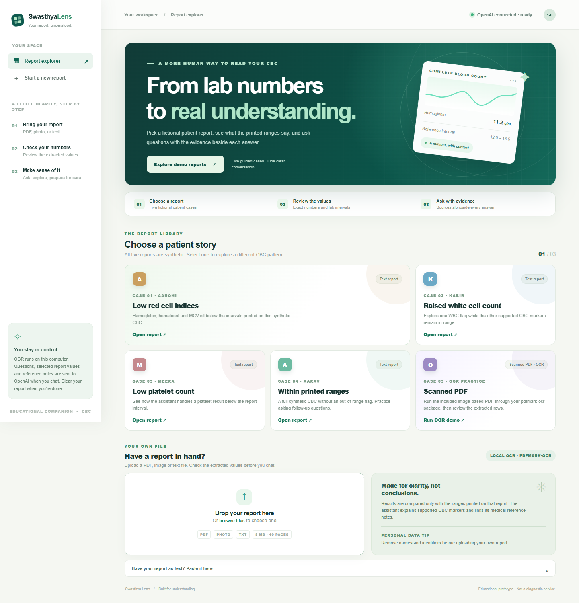
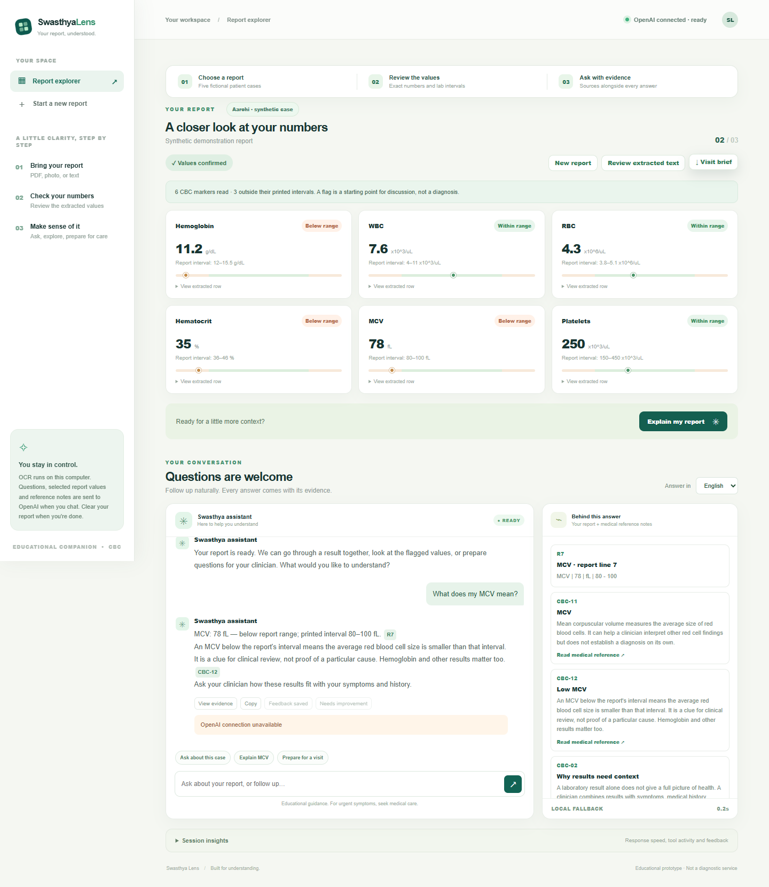

The first problem is often practical: a lab report may be a scan, so ordinary PDF text extraction returns little or nothing. Before an assistant can explain a value, it must be able to read the value.
The current release's PyPI metadata credits Diya Gupta CH23B012. It converts PDFs to Markdown using local text extraction and OCR. In Swasthya Lens, I use it as the entry point for scanned reports, with RapidOCR and automatic full-page OCR for text-poor pages.
pypi.org/project/pdfmark-ocr/ · Version 0.3.1 verified on 26 November 2026
Native PDF text can be extracted directly, without OCR work on every page.
Images and text-poor pages go through local OCR; no cloud OCR key is needed.
The app asks the user to confirm extracted numbers before chat, because OCR can misread a digit.
The package returns Markdown that my CBC parser can read. A PNG or JPG is converted to a PDF first and follows the same path. I included an image-based sample PDF so the OCR route is demonstrable, not just described.
The design decision: OCR is part of a trust workflow. Extracting text is useful; letting someone inspect and correct the extracted values is what makes that text safe enough to use as report evidence.
A complete blood count mixes unfamiliar labels, units, and reference intervals. A generic chatbot can make this worse if it invents a range, overlooks the actual report row, or turns one low value into a diagnosis.
I designed Swasthya Lens to answer a narrower, more useful question: “What does my report actually show, and what can I ask my clinician next?” It keeps the original number and its printed interval in view while the user explores the meaning of a marker.
Five fictional cases, or a PDF, image, TXT file, or pasted text.
Review extracted rows and printed intervals before a user-supplied report enters chat.
Open report-row and medical-note citations beside the answer.
Download a visit brief that repeats confirmed results and questions.

The workspace keeps result cards and conversation together; citations open the evidence panel.
Aarohi's fictional MCV is 78 fL, below the 80–100 fL interval printed in that report. The app can say that plainly and cite the exact row. It does not assign a cause from the number alone.
The sample library also covers high WBC, low platelets, an in-range CBC, and a scanned PDF. These cases make both ordinary and awkward paths easy for a reviewer to test.
The model helps with language and follow-up questions. It does not decide whether a number is high or low. That status comes from deterministic comparison with the interval printed next to the value on the same report.
The parser supports hemoglobin, WBC, RBC, hematocrit, MCV, and platelets. It preserves values and units, leaves missing intervals unclassified, and omits conflicting duplicate rows.
A small library of 22 original CBC notes carries stable citation IDs and medical reference links. Retrieval combines BM25 and TF-IDF with optional embeddings for semantic ranking.
The OpenAI Responses API can call lookup_result for an exact report value. A consultation tool is explicitly labeled as a local demo request; it never books real care.
The app rejects unknown citation IDs, unsupported numbers, and some definite clinical claims. If the model fails a check or the AI service is unavailable, a local cited response keeps the experience usable.
MCV · 78 fL · printed interval 80–100 fL. A click returns to the extracted row.
A source-linked note explains what MCV measures. A click opens its text and medical reference link.
Automated checks cover CBC parsing, printed ranges, scanned-PDF OCR, the review gate, citations, unsupported claims, safety routes, brief generation, and API behavior. A Chrome walkthrough checked the full report flow, PDF download, feedback, and mobile overflow.
A separate synthetic-data live run recorded OpenAI tool calls, retrieval, latency, and a grounding fallback when an answer failed a check. That fallback is evidence of the checker doing work, not proof that every possible answer is safe.
OCR runs locally, but AI chat and semantic retrieval send the question, selected report rows, and reference notes to OpenAI when enabled. Sessions and demo consultation requests live only in server memory and disappear on restart.
The app supports six CBC markers. It does not diagnose, prescribe, authenticate users, keep longitudinal records, or schedule real care. A production healthcare product would need clinical review, secure storage, access controls, and validation.
I connected a package released under my name to a complete product path: from a difficult scan, to reviewed data, to an answer someone can inspect. I am most proud that the system treats uncertainty as something to expose and handle. When OCR or AI is imperfect, the user can see what was read, where an explanation came from, and when the app chose a safer fallback.
github.com/diyagupta9104/swasthya-lens · App, tests, fictional reports, screenshots, and live verification record
pypi.org/project/pdfmark-ocr/ · Package release 0.3.1 credited to Diya Gupta CH23B012
MedlinePlus: Complete Blood Count · One of the public medical references linked from the app's note library